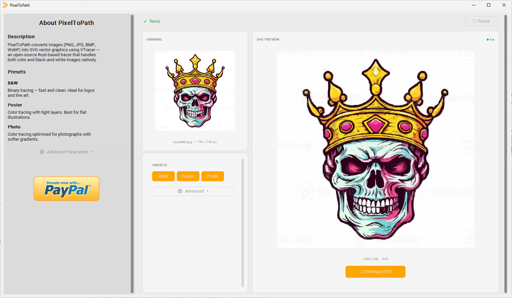

🔒 100% Privat & Offline
Ihre Bilder verlassen niemals Ihren Computer. Kein Upload, kein Server, keine Cloud. PixelToPath läuft vollständig auf Ihrem lokalen Rechner – der sicherste Weg, sensible oder vertrauliche Designs zu konvertieren.
PixelToPath ist ein kostenloses Open-Source-Desktop-Tool, das Ihre Bitmap-Bilder in saubere, skalierbare Vektorgrafiken umwandelt – komplett offline. Keine Datei-Uploads, keine Wartelisten, keine Abonnementgebühren. Der einzige PNG-zu-SVG-Konverter ohne Internet, den Sie einmal installieren und für immer besitzen.

Angetrieben von VTracer-Technologie • 100% Open Source • Offline-Privatsphäre
Ihre Bilder verlassen niemals Ihren Computer. Kein Upload, kein Server, keine Cloud. PixelToPath läuft vollständig auf Ihrem lokalen Rechner – der sicherste Weg, sensible oder vertrauliche Designs zu konvertieren.
Kein Upload, keine Wartezeit, keine Server-Warteschlange. PixelToPath konvertiert Bilder in Millisekunden und nutzt die leistungsstarke VTracer-Engine direkt auf Ihrer CPU.
Keine „3 kostenlose Credits pro Tag“-Limits. Konvertieren Sie so viele PNGs, wie Sie möchten, wann immer Sie möchten. Ideal für die Stapelverarbeitung von Assets für Webentwicklung oder Grafikdesign.
Die Vektorisierung ist für Designer unerlässlich, die Logos ohne Qualitätsverlust skalieren müssen. So verwenden Sie PixelToPath:
Der resultierende SVG-Pfad ist kompatibel mit Adobe Illustrator, Inkscape, Figma und Webbrowsern.
Schließen Sie sich Tausenden von Benutzern an, die Bilder einfach konvertieren.
Auch verfügbar auf: SourceForge | GitHub Releases
Ob Sie ein professioneller Designer oder ein Bastler sind, PixelToPath fügt sich nahtlos in Ihren Workflow ein – besonders wenn Datenschutz und Geschwindigkeit zählen.
Konvertieren Sie Kundenlogos, handgezeichnete Skizzen und Raster-Symbole in saubere, skalierbare SVGs. Vertrauliche Markenwerte müssen keinem Drittanbieter-Server anvertraut werden. Arbeiten Sie offline mit voller Geschwindigkeit, auch ohne WLAN.
Konvertieren Sie PNG-Icon-Sets im Stapelbetrieb in SVG für Ihre Webprojekte. SVG-Dateien laden schneller, skalieren perfekt auf Retina-Displays und können mit CSS gestylt werden. PixelToPath erledigt die Konvertierung sofort, damit Sie sich auf das Erstellen konzentrieren können.
Bereiten Sie Kunstwerke für Schneideplotter, Lasergravierer und Großformatdrucke vor. Diese Maschinen benötigen Vektorpfade, keine Pixel. PixelToPath konvertiert Ihre PNG-Vorlage in Sekundenschnelle in eine druckfertige SVG-Datei.
Arbeiten Sie mit sensiblen Dokumenten, medizinischen Illustrationen, rechtlichen Diagrammen oder proprietären Bauplänen? Online-Konverter laden Ihre Dateien auf Remote-Server hoch. PixelToPath ist ein PNG-zu-SVG-Konverter ohne Upload – Ihre Dateien bleiben immer lokal.
Verwenden Sie PixelToPath in Klassenzimmern, Labors oder auf Schulcomputern, wo der Internetzugang möglicherweise eingeschränkt ist. Sein abhängigkeitsfreies, offline-orientiertes Design macht es ideal für Bildungsumgebungen unter Windows oder Linux.
Integrieren Sie vektorisierte Assets in Hardwareprojekte, eingebettete Schnittstellen oder Mikrocontroller-Displays. Die von PixelToPath generierten SVG-Pfade sind sauber, kompakt und bereit für die weitere Verarbeitung oder Skripterstellung.
PixelToPath ist auch als kostenloses Online-Tool verfügbar – keine Installation erforderlich. Laden Sie Ihr Bild hoch, passen Sie die Einstellungen an und laden Sie Ihr SVG in Sekundenschnelle von jedem Gerät herunter.
Das Online-Tool ausprobieren →PixelToPath bietet auch eine kostenlose Online-Version – aber wenn Sie maximale Privatsphäre, Geschwindigkeit oder Arbeiten ohne Internet benötigen, ist die Desktop-App die richtige Wahl.
| Funktion | PixelToPath Desktop | Andere Online-Tools |
|---|---|---|
| Funktioniert offline | ✅ Ja - kein Internet nötig | ❌ Nein – erfordert Internet |
| Dateiprivatsphäre | ✅ Dateien verlassen niemals Ihr Gerät | ❌ Dateien werden auf Remote-Server hochgeladen |
| Konvertierungslimits | ✅ Unbegrenzt | ❌ Oft 3–5 kostenlos/Tag |
| Geschwindigkeit | ✅ Millisekunden (lokale CPU) | ⚠️ Abhängig von der Serverauslastung |
| Abonnement erforderlich | ✅ Niemals | ❌ Oft kostenpflichtig für volle Qualität |
| Open Source | ✅ MIT-Lizenz | ❌ Proprietär |
| Dateigrößenlimit | ✅ Keines | ❌ Oft auf 5-10 MB begrenzt |
PNG (Portable Network Graphics) ist ein Rasterbildformat. Es speichert Bilder als festes Gitter aus Pixeln. Wenn Sie heranzoomen oder ein PNG in großer Größe drucken, werden Sie feststellen, dass das Bild unscharf oder verpixelt wird. PNG-Dateien eignen sich hervorragend für Fotografien, Screenshots und Webgrafiken in fester Größe – aber sie sind nicht skalierbar.
SVG (Scalable Vector Graphics) ist ein Vektorbildformat. Anstatt von Pixeln beschreibt es Formen mithilfe mathematischer Pfade und Koordinaten. Ein SVG-Logo kann mit 10px oder 10 Metern in perfekter Schärfe angezeigt werden. SVG-Dateien sind außerdem kleiner, im Code bearbeitbar und mit CSS gestaltbar – was sie ideal für Logos, Icons und Illustrationen macht.
Vektorisierung ist der Prozess der Umwandlung eines Rasterbildes (wie ein PNG) in eine Vektordatei (wie ein SVG). PixelToPath verwendet die VTracer-Engine, um die Formen und Farben Ihres Bildes nachzuzeichnen und glatte, skalierbare SVG-Pfade zu generieren. Dies ist unerlässlich, wenn Sie ein Logo ohne Qualitätsverlust vergrößern oder Grafiken für einen Lasercutter oder Siebdruck vorbereiten müssen.
Ja. PixelToPath ist ein vollständig offline arbeitender PNG-zu-SVG-Konverter. Nach der Installation benötigt es keinerlei Internetverbindung, um zu funktionieren. Dies macht es ideal für den Einsatz in eingeschränkten Umgebungen, auf Flügen oder überall dort, wo kein WLAN verfügbar ist.
Komplett kostenlos. PixelToPath ist eine Open-Source-Software, die unter der MIT-Lizenz veröffentlicht wurde. Es gibt keine Konvertierungslimits, keine Wasserzeichen auf exportierten SVGs, keine Abonnements und keine „Pro“-Stufe. Sie können für immer so viele Dateien konvertieren, wie Sie möchten.
Ja – das ist einer der größten Vorteile von PixelToPath. Da es vollständig auf Ihrem lokalen Computer ausgeführt wird, werden Ihre Dateien niemals auf einen Server hochgeladen. Dies macht es zur sichersten Wahl für die Konvertierung vertraulicher Logos, rechtlicher Dokumente, medizinischer Illustrationen oder anderer proprietärer Kunstwerke.
Die exportierten SVG-Dateien sind vollständig standardisiert und kompatibel mit Adobe Illustrator, Inkscape, Figma, Affinity Designer, CorelDRAW, allen modernen Webbrowsern (Chrome, Firefox, Safari, Edge) und jeder anderen Anwendung, die das SVG-Format unterstützt.
PixelToPath ist derzeit für Windows (64-bit) und Linux verfügbar. Die Unterstützung für macOS könnte in einer zukünftigen Version hinzugefügt werden. Überprüfen Sie das GitHub-Repository auf die neuesten Updates.
VTracer ist eine moderne Open-Source-Vektorisierungs-Engine, geschrieben in Rust. Im Gegensatz zu älteren Tools, die nur Schwarz-Weiß-Bilder verarbeiten, unterstützt VTracer die vollfarbige Vektorisierung durch einen mehrschichtigen Clustering-Algorithmus nativ. Es erzeugt saubere, kompakte SVG-Pfade und ist deutlich schneller als herkömmliche Bitmap-Tracer. PixelToPath bietet eine benutzerfreundliche Oberfläche über VTracer, sodass jeder es ohne Befehlszeilenkenntnisse verwenden kann.
Ja. Im Gegensatz zu Online-Tools, die Sie auf wenige kostenlose Konvertierungen pro Tag drosseln, hat PixelToPath keine Einschränkungen. Sie können Hunderte oder Tausende von PNG-Dateien ohne Einschränkungen konvertieren, was es ideal für die Stapelverarbeitung von Icon-Sets und großen Asset-Bibliotheken macht.
Die Nutzung von PixelToPath ist kostenlos. Wenn Ihnen dieses Tool geholfen hat, Zeit zu sparen, ziehen Sie in Erwägung, mir einen Kaffee zu spendieren.
❤️ Spenden über PayPal